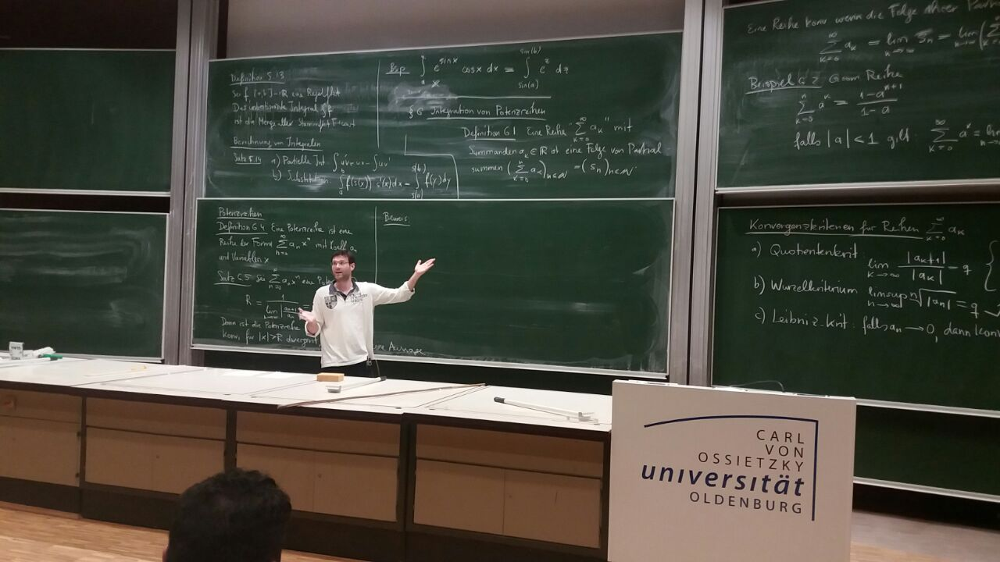

Prof. Dr. Boris Vertman
Professor of Geometry
and Mathematical Physics
Technical University of Berlin
Institute of Mathematics
Straße des 17. Juni 136
10623 Berlin, Germany
Email: boris.vertman@tu-berlin.de

I obtained my M.Sc. as part of Part III of Mathematical Tripos at Cambridge University and my Ph.D. at University of Bonn. After my Postdoctoral Fellowship at Stanford University, I obtained my Habilitation at University of Bonn. After a non-tenure track W2 professorship at University of Münster, I became a tenured W2 Professor for Analysis and since August 2026 I am a W3 Professor for Geometry and Mathematical Physics at TU Berlin.
Research Interests
- Geometric analysis and nonlinear PDE
- Spectral geometry and index theory
- Ricci, Yamabe and mean curvature flows
- Mathematical physics and discrete geometry
- Numerical analysis and phase transitions
Research
My research asks how singularities affect geometric flows and what geometric and topological information can be recovered from the spectra of differential operators. I develop microlocal and analytical methods to study these questions at conical tips, edges and infinity.
A further focus connects continuous and discrete geometry: I study determinants and zeta functions of discrete Laplacians and their relationships with their continuous counterpart in the refinement limit. Here, rigorous analysis and numerical methods come together.
Research Vision
My vision is to strengthen the analytical connections between singular spaces, discrete models and data-driven questions. How is geometric information preserved under discretisation? How can curvature flows and spectral methods help us understand the structure of complex spaces and networks? Looking ahead, I aim to develop these approaches into mathematically grounded methods for unsupervised learning. The goal is to connect fundamental geometric research with transparent mathematical methods for data analysis.
Teaching
In my teaching, I combine clear mathematical reasoning with intuitive motivation and a broader perspective. Dialogue with students, shared discussion and connections between foundational material and current research are central to this approach. By clicking on the picture below you will open a video of my lecture at Ufscar University in Sao Carlos, Brazil.
